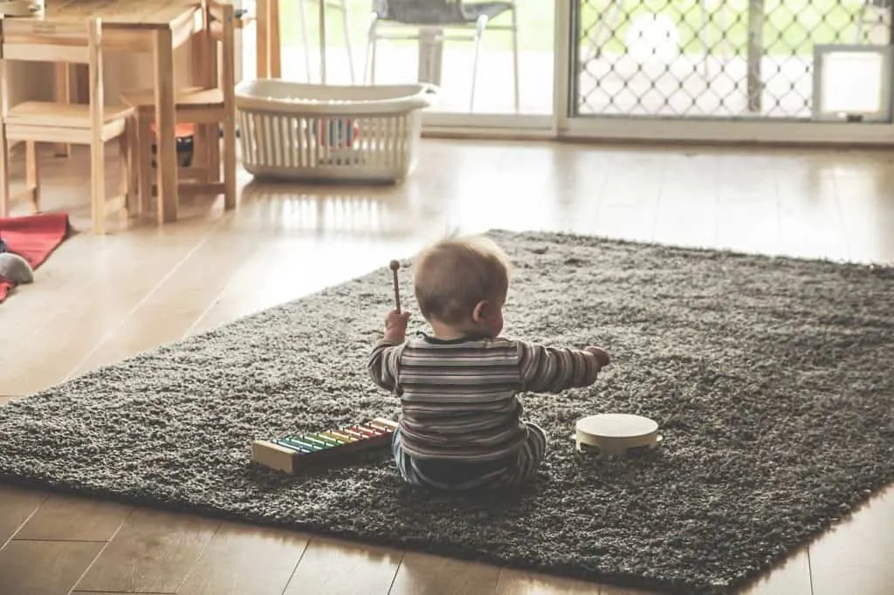

La música, es una de las formas de arte que despierta sentimientos y un sinfín de sensaciones. Estudios han comprobado, por años, que la música puede impactar en nuestra mente y cuerpo de manera positiva. Es muy importante conocer qué tanto puede influir esto en nosotros y, más aún, en los niños.
Sean nuestros hijos, sobrinos o alumnos, los niños en edades preescolares deben ser atendidos con mucho cuidado respecto a su educación y desarrollo tanto emocional como cognitivo.
Los sonidos en general nos acompañan desde antes de nacer, se estima que el feto puede sentir las vibraciones entre las primeras 8-12 semanas de gestación, por lo que es muy recomendable que las madres embarazadas utilicen la música como un recurso de acompañamiento constante.
Esto está relacionado directamente con:
- Fortalecimiento de vínculos emocionalmente sanos entre el bebé y la madre.
- Bienestar físico, mental y emocional para ambos.
La música en el desarrollo integral de la infancia.
Durante las etapas tempranas del desarrollo de los niños, es crucial mantener un alto nivel de atención hacia el área emocional y cognitiva, ya que en esas edades los procesos de comprensión, resolución de conflictos y comportamiento, determinará muchas de las respuestas que tomarán los niños en situaciones adversas, como un juguete roto, un no por respuesta, etc.
El desarrollo de habilidades cognitivas y emocionales es pertinente que siempre vayan de la mano. Escuchar o tocar música, son actividades que permiten un desarrollo integral, incentivando el aprendizaje de nuevas técnicas, enseñando valores como la sensibilidad o empatía, etc.
Tanto para el avance educativo como para la evolución infantil, la música es una herramienta que brinda resultados muy positivos y puede crear hábitos saludables en la vida del niño.
Esto tiene una explicación científica que vale la pena conocer para ser puesta en práctica. Y es que a nivel neurológico, la exposición a melodías con fines educativos tiene un impacto en la formación de neuronas que trabajarán mejor para que el niño llegue a fases de evolución superiores.
Este proceso de regeneración neuronal, muestra sus beneficios a largo plazo, ya que hace a los niños menos propensos a tener enfermedades neurodegenerativas y trastornos conductuales. Más aún, cuando los infantes participan activamente con la exposición musical, se registran resultados aún mejores.
El mantra yoga + música, combinación para la armonía
Como bien se sabe, el yoga es una de las prácticas ancestrales más benéficas a la hora de trabajar la espiritualidad y la paz de las personas. Pues bien, para los niños también significa una alternativa divertida para enfocarse en el aprendizaje emocional, ligado con lo que serían los mantras.
Un mantra (proviene del sánscrito “men”-pensar; “tra”-instrumento) es una palabra que se repite con el objetivo de inducir a la mente y al cuerpo en un estado de relajación. Normalmente, estas palabras y sus variantes dentro del yoga, se repitenen voz alta o internamente, pero utilizan el sonido como una vía para canalizar los pensamientos hacia una experiencia armoniosa.
Más allá de una práctica, el yoga es una forma de vida mediante la cual se busca mejorar la salud física, mental, emocional y espiritual. Dentro de este camino, herramientas como la música y los sonidos de relajación son importantes para llevar a cabo una meditación.
Sin embargo, recordemos que la mejor forma de enseñar a los niños es con algo que los divierta. Por eso, existen muchos juegos dentro de la disciplina del yoga, que utilizan la música como elemento para desarrollar la atención y la inteligencia emocional.
Practicar esta actividad a través de juegos y en combinación con música, aporta ideales de liderazgo, trabajo en equipo, además de mejorar las habilidades psicomotrices, como el movimiento y control del cuerpo. Para esto existen juegos como el Tren del Yoga o Congelados por el Yoga, que consiste en mantenerse en movimiento al ritmo de la música y, al detenerse repentinamente, los participantes deben quedar congelados en posturas de yoga que han sido realizadas anteriormente.
Divertidos ejercicios musicales para enseñar a los niños
1. Una forma de comunicación
Los sonidos son la primera manera que tienen los niños para expresar sus emociones: llanto, balbuceo, gritos, risas. Entender que los sonidos armónicos y en tonalidades tienen un significado, nos hará comprender mejor las necesidades del niño.
Como ejemplo de esto, prueba cantar una canción simple, alegre, en momentos específicos como la hora de la cena, el baño o durante un paseo. Esto creará un patrón de memoria para el niño, que terminará asociando la música con ciertos ambientes. También es buena idea componer una tonada corta con el nombre de tu hijo, esto lo ayudará a entender mejor las formas de comunicarse y todo lo que rodea.
2. El lenguaje musical y sus elementos
La exposición musical a corta edad permite a los infantes tener mejor razonamiento lógico y relaciones de espacio. Hablando de la parte educativa, el compositor suizo Émile Jaques-Dalcroze, propuso el llamado Método Dalcroze, para ayudar a los estudiantes a entender la música a través de ejercicios físicos (caminar, saltar, girar).
Esta técnica pedagógica explica que el aprendizaje puede adquirirse a través del cuerpo y conociendo los elementos rítmicos, ya que se vive la experiencia de “sentir” y comprender a través del cuerpo.
Como ejemplo práctico, el poner canciones y sonidos relacionados con instrumentos que marquen el ritmo en distintos grados de volumen, es un buen ejercicio para enseñar este método de aprendizaje.
3. Exploración sensorial
Los niños, incluso cuando son bebés, tienen una percepción visual muy amplia, ya que imitan lo que ven y lo integran. Cuando hablamos de música, también entra lo que es el movimiento y la consciencia corporal. Las señales visuales, acompañadas del sonido y tacto, ayudan al desarrollo cognitivo.
Por esto, también es importante que el niño aprenda y experimente a través de su cuerpo, lo que se denomina cinestesia, ya que la percepción se entrena con el conocimiento del espacio, los movimientos y el sentir físico.
YogaKiddy ofrece Formaciones de Sonoterapia Infantil, pincha aquí para más informaciones